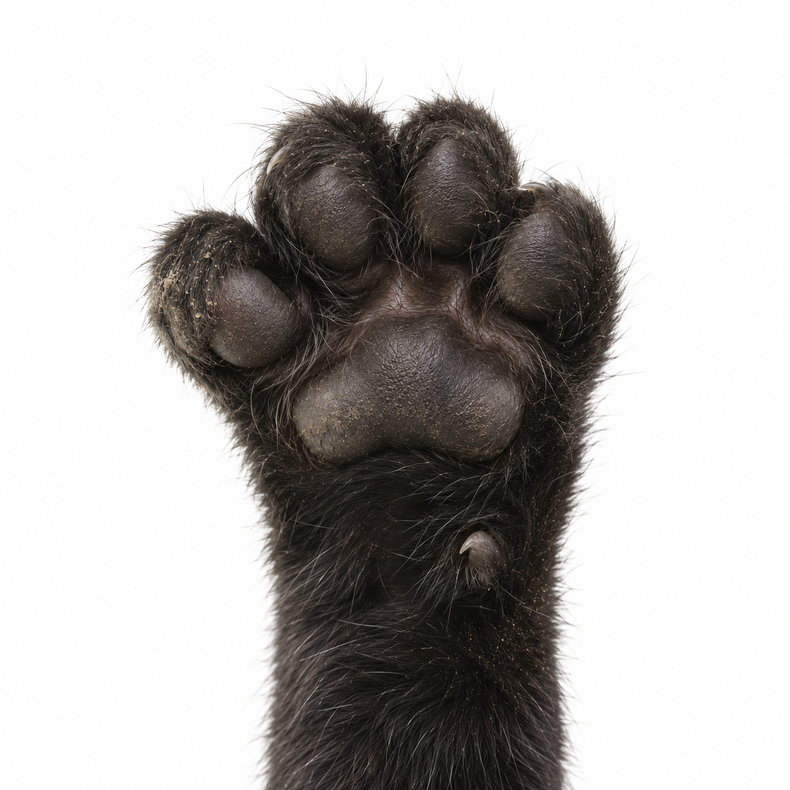
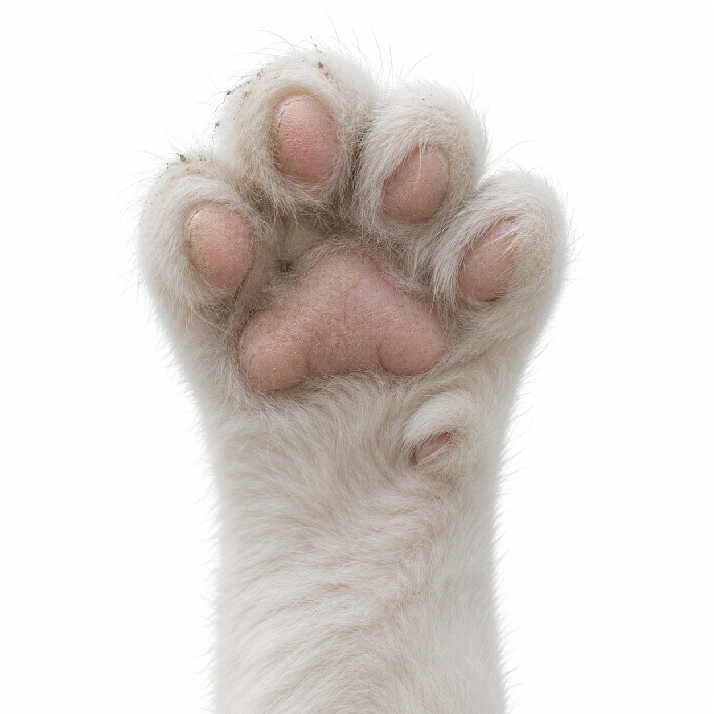

01
Full image ↓Production
Black short fur
REAL FUR / PRINTED INK
Centered paws, soft pads facing you, and a little outdoor dust. Compare the realistic studies with the black-and-white stickers.

Black short fur

Silver tabby

White short fur

Black and white